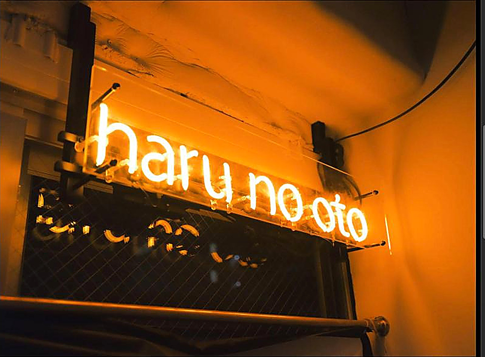
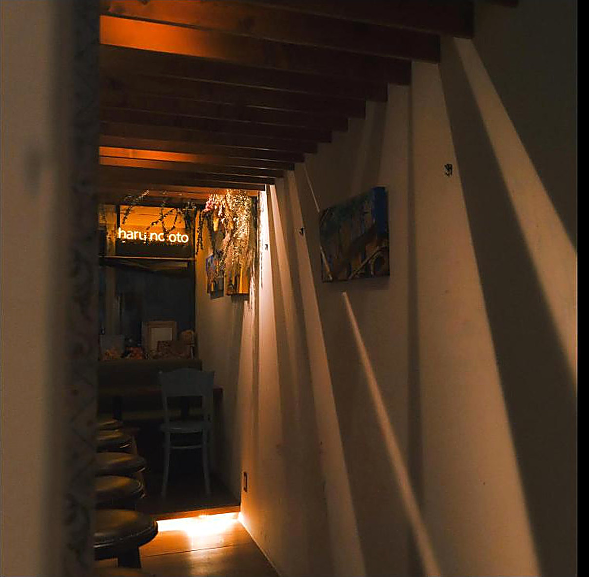
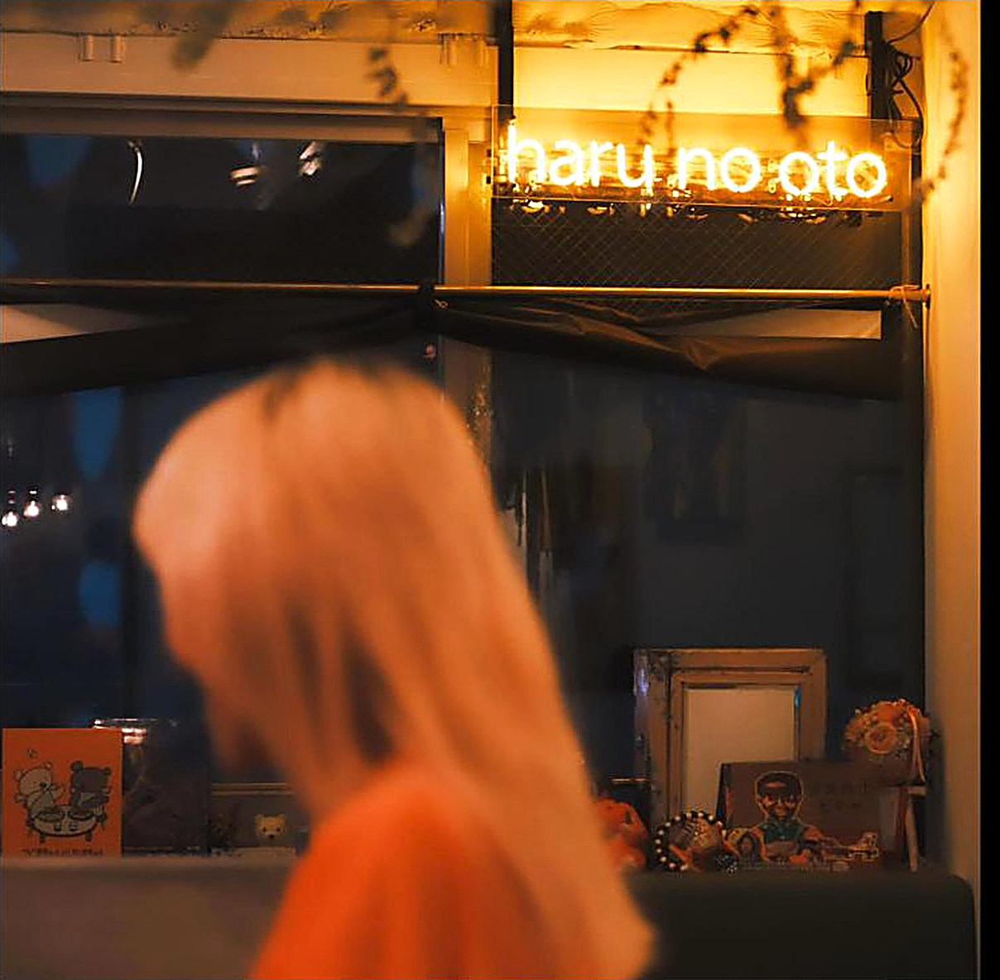
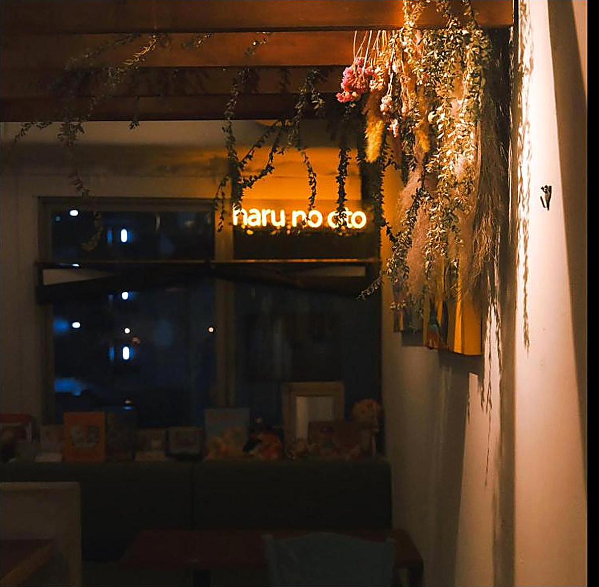
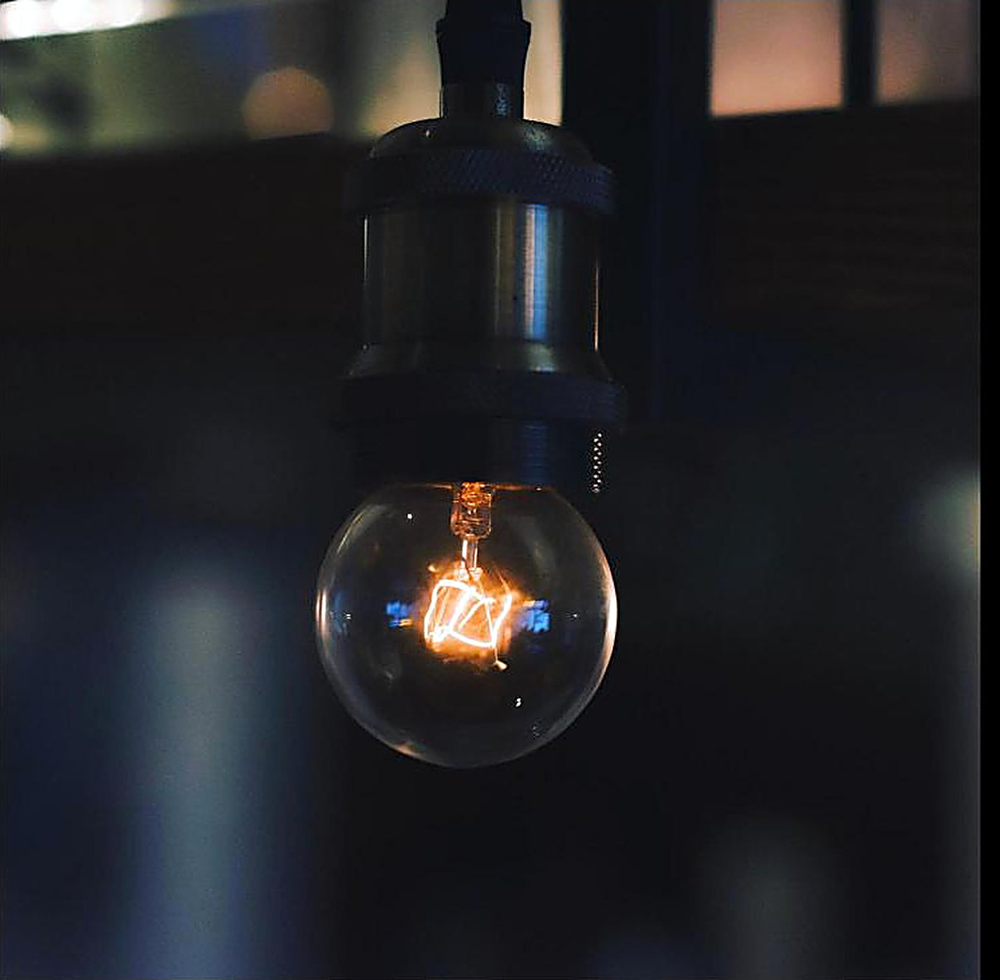
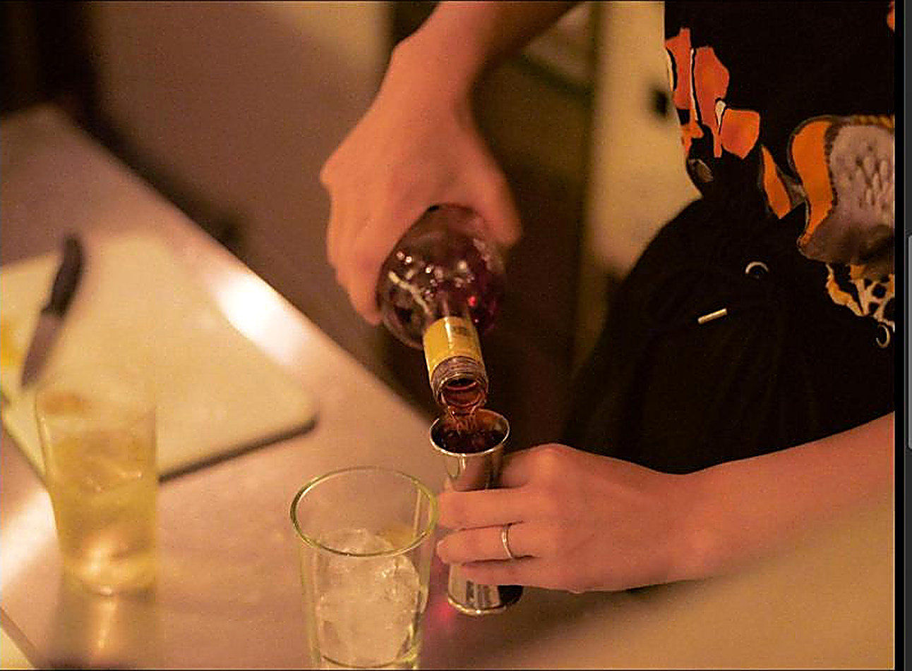
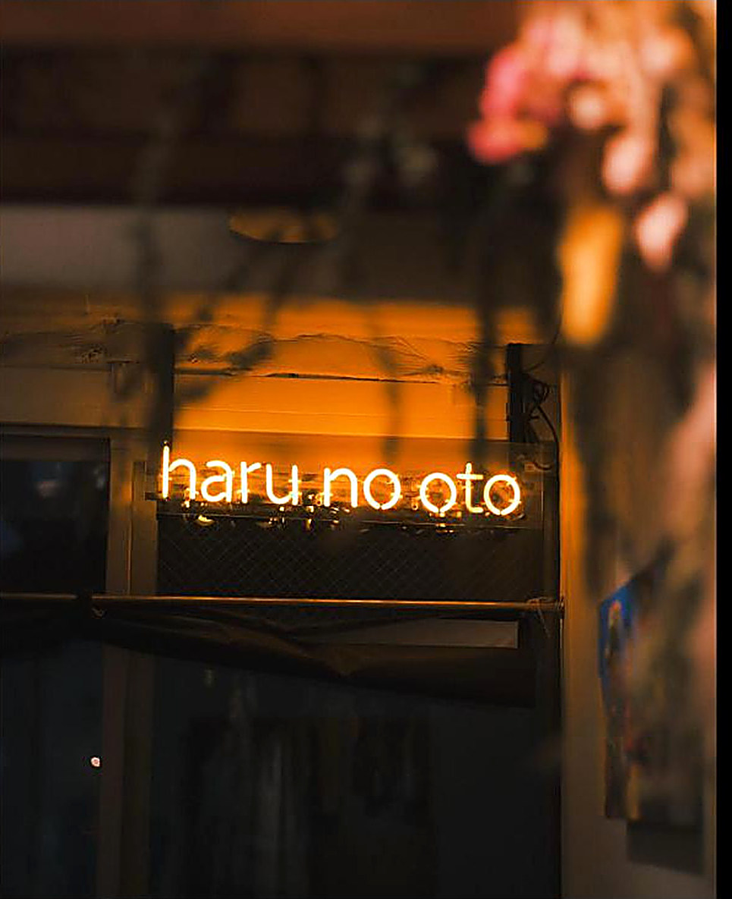

PRIVATE HIRE
水曜と日曜は、お店ごと貸し切り。
¥3,500貸切飲み放題
- 開催日
- 水曜・日曜のみ
- 内容
- 店内の貸切と飲み放題
- ご相談
- 人数や時間などの条件は、DMでご確認ください
- 問い合わせ
- Instagram DM
こんな夜に
誕生日に ／ ライブの打ち上げに ／ 気の合う人だけの集まりに
貸切について問い合わせる

Side A店の中へ

A1stairs
ビルの2階。その先で、灯りが待っています。

A2neon
夜になると灯る、オレンジ色の目印。


A3light
ゆっくり、目を慣らしてください。

A4counter
ひとりでも、ライブの帰りでも。気づけば少し長居してしまう、そんな場所です。

Interlude
灯りは消さずに、待っています。
Side B夜のこと
PRIVATE HIRE
LIVE
ギターを囲む夜や、ライブイベントを開いています。日程はInstagramでお知らせしています。
次のライブ情報は、Instagramで確認できます。
PAST SHOWSこれまでのライブ
haru no oto presents
12.262025
FRI
TICKET ¥1,500 (+1 DRINK)25名限定
3周年LIVE
Accessはじめての方へ
20:00頃 – Late ／ 定休 月・火
営業時間や臨時の変更は、Instagramで最新情報をご確認ください。